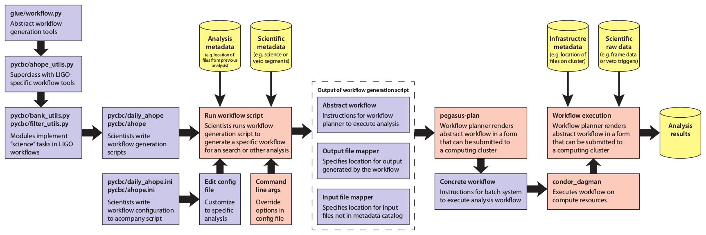

Workflow: the inspiral analysis workflow generator (pycbc.workflow)¶
Introduction¶
Pycbc’s workflow module is a tool used to create the workflows needed to perform coincident analyses of gravitational-wave data searching for compact-binary-coalescences using matched-filtering.
The pycbc workflow runs through a number of stages, which are designed to be as independent of each other as possible, while also allowing an integrated end-to-end workflow to be constructed.
Documentation of the workflow module and how to run it can be found below.
Please see the following poster, presentied at the March LVC meeting, 2014, for an introduction to the workflow module (referred to as “ahope”). Especially see the following top-level workflow generation model.
{kind=link}
Workflow module documentation¶
The following contains a list of the sub-modules in pycbc’s workflow module, a bried description of what each does, and a link to documentation on how to use each module. Collectively these pages should provide complete details on how to set up a workflow from scratch.
Basics and overview¶
The following page gives a description of how the workflow module expects configuration files to be layed out and how the basic command-line interface functions. If writing a workflow for the first time we recommend you read through this page!
Generating segments¶
Obtain the science segments and data-quality segments from making queries to a segment database.
Obtaining data¶
Run queries to the datafind server to find the needed frames and test these for consistency if desired
Injection generation¶
Generate injection files for use later in the analysis
Template bank¶
Construct a template bank, or banks, of CBC waveforms that will be used to matched-filter the data with.
Split table¶
Split an output file into numerous parts to allow parallel analysis. Normally used to split the template bank up to allow matched-filtering in parallel
Matched-filtering¶
Perform the matched-filters and calculate any signal-based consistency tests that should be calculated.
Coincidence¶
Determine if “triggers” seen in one detector are also seen in other detectors. Also check for coincidence between time-slid triggers for background evaluation
Method documentation¶
The documentation for all functions/modules within pycbc.workflow follows, unless you are looking for a specific function, it might be easier to navigate through the section links above.
- pycbc.workflow package
- Submodules
- pycbc.workflow.coincidence module
- pycbc.workflow.configparser_test module
- pycbc.workflow.configuration module
- pycbc.workflow.core module
- pycbc.workflow.datafind module
- pycbc.workflow.grb_utils module
- pycbc.workflow.inference_followups module
- pycbc.workflow.injection module
- pycbc.workflow.jobsetup module
- pycbc.workflow.matched_filter module
- pycbc.workflow.minifollowups module
- pycbc.workflow.pegasus_sites module
- pycbc.workflow.pegasus_workflow module
- pycbc.workflow.plotting module
- pycbc.workflow.psd module
- pycbc.workflow.psdfiles module
- pycbc.workflow.segment module
- pycbc.workflow.splittable module
- pycbc.workflow.tmpltbank module
- Module contents